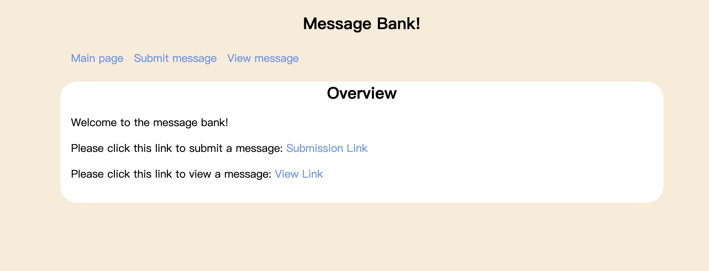

import scrapy
from scrapy.http import Request
from scrapy.linkextractors import LinkExtractor
import random
class TmdbSpider(scrapy.Spider):
name = 'tmdb_spider'
start_urls = ['https://www.themoviedb.org/movie/603-the-matrix']url:https://owen020215.github.io/newhw/posts/hw3/
Introduction
In this blog, I will be explaining how to build an interesting website that allows us to submit messages and view them.
My approach is to build 3 separate pages for the website: the Main page, Submit, and View. The first page is a simple overview page, where users can be redirected to the Submit and View pages.
Here is my GitHub Repo for the project: https://github.com/owen020215/Flask-Website-main/tree/main
Main Page

def parse(self, response):
"""
Assume that you start on a movie page, and then navigate to the Cast & Crew page
Then calls parse_full_credits(self,response)
Does not output anything
"""
# concatenate the url by adding the /cast at the end
new_urls = response.url + '/cast'
yield Request(new_urls, callback=self.parse_full_credits)def parse_full_credits(self, response):
"""
Assume that you start on the Cast & Crew page
yield a scrapy.Request for the page of each actor listed on the page
Then calls parse_actor_page(self,response) when reaching each actor's page
Does not output anything
"""
# gets the actors_urls
actor_urls = response.css('.pad:nth-child(1) .info a::attr(href)').getall()
# concatenate the urls so that they are complete
actor_urls = ["https://www.themoviedb.org" + url for url in actor_urls]
# Yield Request for each page
for actor_url in actor_urls:
yield Request(actor_url, callback=self.parse_actor_page)def parse_actor_page(self, response):
"""
Assume that you start on the page of an actor
yield a dictionary with two key-value pairs in the form
{"actor" : actor_name, "movie_or_TV_name" : movie_or_TV_name}
"""
# Get the actor's name from the title
actor_name = response.css(".title a::text").get()
# Get the movies' names from the page
movies_and_tv_shows = response.css('.tooltip bdi::text').getall()
# Output the dictionary
for movie_or_tv_show in movies_and_tv_shows:
yield {"actor": actor_name, "movie_or_TV_name": movie_or_tv_show}